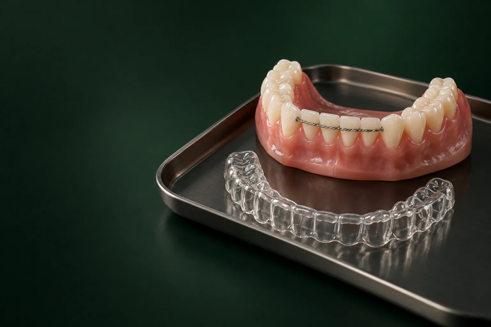

Каштанова Екатерина Константиновна
Терапевт, ортодонт
Эстетическая реставрация и прикус
Записаться к врачу
Ретейнеры в стоматологии «Умная Медицина» в пос. Удельная (Раменский округ): это удерживающие конструкции, которые не дают зубам вернуться на прежнее место после брекетов или элайнеров.
Имеются противопоказания. Необходима консультация специалиста.
Мы ставим несъёмный проволочный ретейнер: 11 000 ₽, и изготавливаем съёмные ретенционные каппы для взрослых, от 7 500 ₽. Ретенционный этап ведёт врач-ортодонт Каштанова Екатерина Константиновна. На консультации ортодонта (1 700 ₽) врач оценит результат лечения, подберёт вид фиксации и сразу назовёт стоимость.
Стоимость зависит от того, какую конструкцию назначит врач: тонкую проволоку на внутренней стороне зубов, прозрачную съёмную капу или их сочетание. Иногда удерживать нужно обе челюсти, иногда: только одну, поэтому итоговую сумму врач называет после осмотра. Если вы ещё носите брекет-систему, план ретенции можно обсудить заранее: так вы будете знать полную стоимость лечения до его завершения.
Цены «от»: минимальные, окончательная стоимость зависит от клинической ситуации. Цены актуальны на 18.10.2026. Все услуги и цены стоматологии: на странице цены.
уточняем у клиники
Подробнее: на странице рассрочка и налоговый вычет.
Когда брекеты сняты, зубы уже стоят ровно, но кость и связки вокруг корней ещё не успели окончательно перестроиться. Волокна, которые удерживают зуб в лунке, какое-то время «помнят» старое положение и тянут его назад. Дополнительно на зубы постоянно действуют язык, губы, жевательная нагрузка. Без удерживающей конструкции зубы могут постепенно сместиться: сначала незаметно, потом так, что снова появятся щели или скученность.
Ортодонтический ретейнер фиксирует достигнутый результат, пока ткани вокруг зубов закрепляются в новом положении. Этот этап, такая же часть лечения, как и сама брекет-система: от него зависит, сохранится ли улыбка, за которую вы заплатили временем и деньгами. Поэтому ретенцию планируют ещё до снятия брекетов.
В клинике используют оба основных вида удерживающих конструкций. Какой подойдёт вам, решает ортодонт: с учётом исходного прикуса, того, как двигались зубы, и ваших привычек.
Тонкая проволока, которую приклеивают к внутренней стороне передних зубов, поэтому его ещё называют лингвальным. Снаружи конструкцию не видно, она не мешает говорить и работает круглосуточно, без вашего участия. Её нельзя забыть надеть или потерять. Чаще всего проволочный ретейнер ставят на нижние передние зубы, но его можно зафиксировать и на верхней челюсти: если позволяет смыкание зубов. Уход за ним требует внимания: налёт задерживается вокруг проволоки, поэтому понадобятся ёршики, флоссы и регулярная профгигиена.
уточняем у клиники
Съёмная прозрачная капа, которую изготавливают по слепкам ваших зубов после снятия брекетов. Она плотно охватывает зубной ряд и не даёт ему смещаться. Капу легко снять перед едой и чисткой зубов, а сама по себе она почти незаметна. Минус в том, что результат зависит от дисциплины: если надевать капу реже, чем назначил врач, зубы могут сдвинуться. Хранить её нужно в контейнере, а при трещинах или потере, сразу обращаться к ортодонту.
Часто врач назначает комбинацию: несъёмный ретейнер на внутренней стороне передних зубов и съёмную капу на ночь. Такая схема особенно полезна, если исходно была выраженная скученность или зубы были сильно повёрнуты.
Единого срока для всех нет. Он зависит от того, какое нарушение исправляли, сколько длилось активное лечение, в каком возрасте вы его проходили и как ведут себя зубы после снятия брекетов. Чем сильнее были смещены зубы, тем дольше им нужна опора. Многие ортодонты рекомендуют длительную, а иногда и пожизненную ретенцию, особенно на нижних передних зубах, которые чаще всего склонны к смещению.
Конкретную схему: сколько носить несъёмную конструкцию и в каком режиме надевать капу, врач назначит индивидуально и будет корректировать её на контрольных осмотрах уточняем у клиники. Снимать ретейнер раньше назначенного срока по своему решению не стоит: даже через несколько лет зубы могут начать смещаться.
Прозрачные капы-элайнеры двигают зубы так же, как брекеты, поэтому после курса тоже нужен удерживающий этап. Последний элайнер нельзя просто продолжать носить вместо ретенционной капы: он рассчитан на перемещение, а не на удержание. После лечения на элайнерах врач подбирает несъёмную проволоку, ретенционную капу или их сочетание: по тем же принципам, что и после брекетов.
Конструкция сама по себе не портит зубы, но вокруг проволоки скапливается налёт, а под капой: остатки еды, если надеть её на непочищенные зубы. Чтобы избежать кариеса и воспаления дёсен:
Регулярно проходите профессиональную гигиену: специалист уберёт налёт и камень вокруг проволоки и проверит, держится ли она уточняем у клиники.
Чаще всего проволока отходит от одного зуба, это заметно языком: появляется зазор или острый край. Конструкция перестаёт удерживать этот зуб, и он может начать смещаться, поэтому откладывать визит не стоит.
уточняем у клиники
Обо всех методах исправления прикуса: в разделе ортодонтия, обо всех специалистах, на странице врачи. На ретенционные визиты к нам приезжают из Удельной, Жуковского и соседних посёлков, а также из Люберец, Раменского и Балашихи.
Терапевт, ортодонт
Эстетическая реставрация и прикус
Записаться к врачуотзыв пациента
Это удерживающие конструкции, которые сохраняют ровное положение зубов после ортодонтического лечения. Несъёмный вариант: тонкая проволока на внутренней стороне передних зубов, снаружи её не видно. Съёмный: прозрачная капа по форме вашего зубного ряда.
Удерживающий этап нужен практически всем, кто закончил выравнивание зубов. Без него зубы могут постепенно сместиться обратно. Какую конструкцию выбрать: проволоку, капу или обе, решает ортодонт.
Несъёмный ретейнер стоит 11 000 ₽, съёмная капа для взрослых, от 7 500 ₽. Консультация ортодонта: 1 700 ₽. Точную сумму врач назовёт после осмотра, когда станет понятно, на какие челюсти нужна ретенция.
Срок индивидуален и зависит от исходного нарушения, длительности лечения и возраста. Часто ретенция бывает длительной, особенно на нижних передних зубах. Схему ношения назначает и корректирует врач на контрольных визитах.
Несъёмная металлическая проволока обычно не мешает пройти исследование, но может искажать изображение в области лица и челюстей. Перед МРТ обязательно предупредите врача-рентгенолога о ретейнере: он решит, можно ли проводить исследование. Если конструкцию нужно временно снять, это делает ортодонт уточняем у клиники.
Нет. Проволоку снимает ортодонт: он аккуратно удаляет её и композит с зубов, затем полирует эмаль. Самостоятельные попытки могут повредить эмаль, а преждевременное снятие, привести к смещению зубов.
Да, если позволяет смыкание: при глубоком прикусе нижние зубы могут задевать проволоку на верхних, и тогда врач предложит капу. Решение принимают после осмотра.
Первые дни язык ощущает проволоку, но к ней быстро привыкают. Есть можно привычные продукты, кроме очень твёрдых, которые откусывают передними зубами. Капу на время еды снимают.
Устоявшееся написание в стоматологии, «ретейнер», от английского retainer, «удерживающий». Вариант «ритейнер» встречается в разговорной речи, речь идёт об одной и той же конструкции.
Запишитесь на консультацию: план лечения с ценой по этапам
Имеются противопоказания. Необходима консультация специалиста.
Адрес клиники: Московская обл., Раменский округ, пос. Удельная, ул. Громова, 10/2. Клиника рядом с Жуковским; по соседству Малаховка, Быково, Ильинский, Родники, Островцы, Красково и Октябрьский. Пациенты приезжают и из Люберец, Раменского и Балашихи.
На машине: из Жуковского через Быково, без выезда в Москву. Парковка: уточняем у клиники.
На МЦД-3: до станции Удельная, от неё пешком до клиники. Из Жуковского: от станции Отдых три остановки без пересадок (Ильинская, Быково, Удельная).
Если ретейнер отклеился, клиника рядом с домом позволяет подклеить его быстро, не дожидаясь, пока зуб сместится.
Подробнее о клинике: на странице стоматология в Удельной.
Имеются противопоказания. Необходима консультация специалиста.
пгт Удельная, Раменский округ, рядом с Жуковским.
Ежедневно с 9:00 до 21:00
+7 495 150-36-15К нам ездят из Жуковского, Раменского, Быкова, Ильинского, Красково, Малаховки, Островцов, Люберец и Балашихи.
Перезвоним за 5 минут, подберём врача и удобное время.
Оставьте номер, администратор перезвонит и ответит на вопросы.
Подойдёт КТ, панорама, прицельный снимок или фото плана лечения из другой клиники. Врач посмотрит и ответит в течение рабочего дня. Это бесплатно.
Хирург, ортопед и терапевт осмотрят вас вместе, сделаем КТ. Консультация бесплатная, стоимость лечения врач назовёт после осмотра.
Консультацию ведут вместе
 ХирургМихаил
ХирургМихаил ОртопедЕвгений
ОртопедЕвгений ТерапевтАртём
ТерапевтАртёмПервый визит бесплатно
Хирург, ортопед и терапевт посмотрят ваш случай вместе и предложат два-три варианта с ценой. Оставьте номер, администратор перезвонит и подберёт время.
Скидка 10% на лечение, если оплатить его в день консультации
Перезвоним за 5 минут, ежедневно с 9:00 до 21:00.